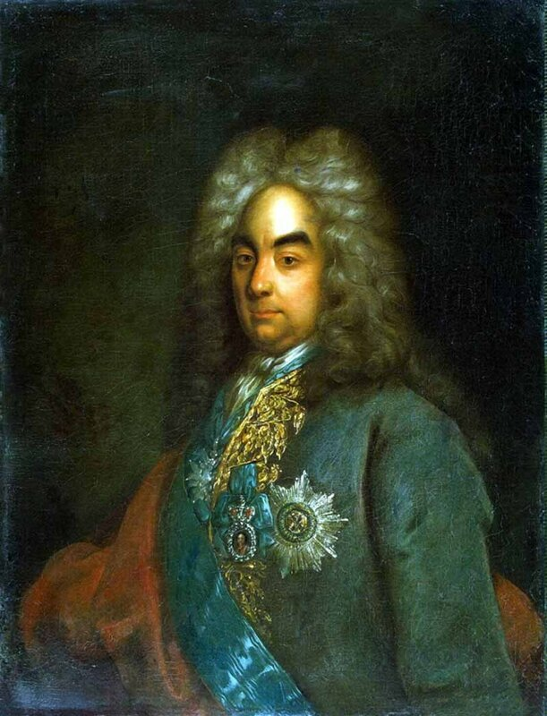

 <div style="text-align:left"><span style="font-size: medium;">На днях потомки наших великих писателей отметились на встрече с президентом, почудили немного, но все в рамках приличия. Потомкам можно. Труднее было предкам. Люди, интересующиеся генеалогией, без сомнения знают, что корнем «нашего всего» был Петр Андреевич Толстой, первый писатель из великого рода Толстых, «умнейшая голова в России.» Исследования историков показали, что П.А. Толстой был предком не только Л.Н. Толстого и А.С.Пушкина, но и А. К. Толстого, А. Н. Толстого, Ф. И. Тютчева, П. Я. Чаадаева, А. И.  Одоевского, В. Ф. Одоевского, Д. В. Веневитинова и других заметных деятелей нашей культуры.<br/><div style="text-align:center"></div><br/><p align="center"><span style="font-size: small;">Портрет графа Петра Андреевича Толстого. 1710-е гг. Художник  Иоган Гонфрид Таннауэр.</span></p><br/><br/>«Путешествие стольника П.А. Толстого по Европе» - это одни из первых записок русских путешественников по европейским странам. До Петра поездки за границу частных лиц ограничивались, как правило, паломничеством к «святым местам». Путешествие на католический Запад считалсь большим грехом. Наш первый студент, посланный для обучения в Германию, по приказу Ивана Грозного был убит («смерть вкусил от мучителя неповинне», как писал Курбский). Пятнадцать юношей, посланных Борисом Годуновым на учебу в Германию, не желая разделять участь первопроходца, практически в полном составе (кроме одного) оказались невозвращенцами («пустились в свет и не хотели видеть своего отечества»).<br/><br/><a name="cutid1"></a> «Третья волна» отправки дворянских детей «за море» отмечена была при Петре. Помимо объявленной цели («обучение наукам навтичным») имела и скрытый политический подтекст: взять в заложники детей наиболее опасных представителей придворных кругов, замеченных в симпатиях к стрельцам во время первого стрелецкого бунта, на период отъезда Великого посольства из Москвы. Последующие события подтвердили верность расчета Петра: во втором стрелецком бунте 1698 года никто из близких родственников отъехавших на учение стольников участия не принимал.<br/><br/>Читать «Путешествие стольника П.А. Толстого по Европе» очень интересно. А для тех, кто, подобно вашему покорному слуге, еще и интересуется этим периодом европейской истории, очень познавательно. Многие морские («навтические») понятия и термины русского языка впервые были введены в обиход как раз Толстым. Сегодня я хочу познакомить Вас с одним таким термином. Это тип корабля, который в записках П.А. Толстого обозначен как <i>«марцылиана», марцилияна</i>. Описывая венецианский Арсенал, русский путешественник пишет:<br/><br/><p style="margin: 0cm 0cm 0pt 6cm;"><br/> <span style="font-size: medium;">На том же дворе делают всякие суда: <i>карабли, каторги, галияты, марцылияне</i> и иные всякие к морскому плаванию суды.<br/>           <span style="font-size:x-small;">П.А.Толстой «Путешествие стольника П. А. Толстого по Европе 1697–1699» с.59</span></span></p><br/>Пережидая непогоду у входа в венецианскую лагуну, П.А. Толстой также неоднократно отмечает <i>марцилияну</i> среди замеченных там судов.<br/><br/><p style="margin: 0cm 0cm 0pt 6cm;"><br/> <span style="font-size: medium;">… И того числа пришли мы в Ыстрии ж под город Паренцу и под тем городом стали. И ожидали способнаго ветру, которым бы могли приттить в Венецию, для того что в Венецию карабли входят, усматривая добраго времени, потому что в венецкой порт вход караблям зело труден, для того что место то, которым карабли в венецкой порт входят, уско и маловодно. И всегда ожидают времени такого, чтоб ветр был <i>трамонтана</i>, то есть северной и между севера и  востока, невеликой; и, когда вода морская по стественному своему обыклому действию умножится и пойдет к берегам, в то время караблям свободной вход бывает в венецкой порт. Для того и мы под городом Парянцою стояли, ожидая такого вышеписанного времени, понеже всегда то бывает: хотящие <i>карабли</i>, и <i>марцилияне</i>, и всякие немалые <i>бастименты</i>, то есть суды, иттить в венецкой порт, те стоят в ыстрийских портах под Рувином, и под Паренцою, и под иными городами; а, не дождав вышеписаннаго времени, в венецкой порт никакие суды не ходят, потому что многия злыя случаи <i>караблям</i>, и<i> марцилияном</i>, и иным судам в том входе в венецкой порт случались. И так того входу в венецкой порт <i>карабли</i>, и <i>марцилияне</i>, и <i>галиясы</i>, и галеры, и всякие суды боятца, когда и усмотря времени добраго, к тому //порту какое судно пойдет и в пути ветр изменится или почнет быть хотя и способной, да великой, тогда, не доходя того места, поворачиваются назад и входят в порты, в которые бы и не хотели.<br/>           <span style="font-size:x-small;">Там же, с.79</span></span></p><br/>Толстой отмечает вполне определеную территориальную привязку марсилиан. Так, они совсем отстутствуют на Мальте:<br/><br/><p style="margin: 0cm 0cm 0pt 6cm;"><br/> <span style="font-size: medium;">Судов морских в Малте употребляют: галеры, тартаны, филюги, брегантины и иных, таких же; а караблей, фрегадонов, марцилиянов <br/>и иных, тому подобных, не держат. <br/><br/>           <span style="font-size:x-small;">Там же,  с.173</span></span></p><br/>Мы обязательно покажем в дальнейшем, что за корабли были <i>марсилианы</i>, а пока небольшое отступление.<br/><br/>В своем рассказе мы говорим в основном о галерах; это и понятно, о них не много сказано в отечественной литературе, а некоторые понятия вообще впервые вводятся в русский язык или извлекаются из глубокого забытья. Но развитие галер на Средиземном море нельзя правильно понять вне окружения, в котором оно осуществлялось. Поэтому несколько ближайших постов я хочу посвятить истории появления парусных кораблей в водах Средиземноморья в эпоху галер, их особенностям, а также связям этой истории с корабельным делом Северной Европы.</span></div> 